Handleiding Android
Alles wat de app kan, per tegel op het beginscherm. Gebruik je een iPhone? Kies dan hieronder de iPhone-versie.
🏠Beginscherm
Waar alles begint
Bovenaan staat Mijn team zodra je een teamlink hebt ingesteld. Daaronder vijf tegels: Coach, Scheidsrechter, Afgeronde wedstrijden, Spelers en Badges. Met het tandwiel rechtsboven open je de Instellingen.
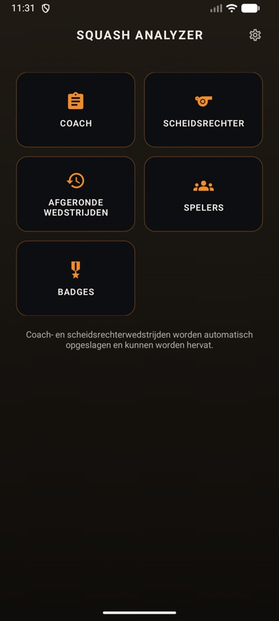
👥Mijn team
De kaart boven de tegels
Speel je competitie via sbn.toernooi.nl? Dan zie je de stand van je team direct op het beginscherm.
- Open Instellingen en plak bij Mijn team de openbare teamlink (zoals https://sbn.toernooi.nl/league/…/team/…).
- Tik op Bewaar teamlink. De kaart verschijnt op het beginscherm.
De kaart toont je stand, gespeelde wedstrijden, punten en de volgende wedstrijd met datum. Tik op de kaart voor het hele overzicht: de stand van de poule, alle wedstrijden met tijd en uitslag, en de spelers van je team.
Wil je de kaart weg? Tik in Instellingen op Verwijder bij de teamlink.
📋Coach
Elke rally vastleggen: wie scoort, hoe, waar en met welke slag
Een wedstrijd starten of hervatten
Loopt er nog een wedstrijd, dan zie je eerst Wedstrijd hervatten met de stand. Kies Hervatten, of Nieuwe wedstrijd (de oude wordt dan als afgebroken bewaard).
- Vul bij Speler 1 en Speler 2 een naam in, of tik op Kies speler om een opgeslagen speler te kiezen. Alleen gekozen spelers kunnen badges verdienen.
- Tik op Start. Speler 1 serveert eerst; er wordt gespeeld tot drie gewonnen games (best of 5).
Een punt invoeren
- Tik op de score van de speler die het punt wint.
- Kies hoe het punt viel: Winner, Forced error (fout door druk), Unforced error (fout zonder druk), Stroke of Servicepunt (alleen voor de serveerder).
- Tik op de baan waar het punt viel. Standaard is de baan verdeeld in 6 vakken: voor, midden en achter, links en rechts. (Liever 9 vakken? Zie Instellingen.)
- Kies de slag. Je ziet alleen slagen die bij dat vak passen: voorin Drop, Boast en Kill; in het midden Kill, Drive, Cross en Boast; achterin Drive, Cross en Lob. Was het een volley? Zet dan eerst Uit de lucht aan.
Bij een stroke of een unforced error kies je alleen het vak; een servicepunt telt meteen. Elke stap heeft een knop Annuleer. Met Undo onderaan maak je het laatste punt ongedaan.
Op het scorebord zie je wie serveert en uit welk vak (Links/Rechts). Klopt het vak niet, tik dan het andere aan.
Game en wedstrijd klaar
Na een game verschijnen Analyse en Volgende game. Na de laatste game zie je de winnaar, de verdiende badges, Analyse, Deel score (Kort, Scorekaart of Verslag, bijvoorbeeld voor WhatsApp) en Klaar.
Analyse en AI Coach
De game-analyse toont per speler en per game: gemiddelde rallyduur bij winst en verlies, beste zone en slag, een heatmap van de baan, de meest gebruikte slagen (een volley staat apart, zoals Volley cross), de puntverdeling, het aantal punten uit de lucht en tactisch advies. Met Deel stuur je een samenvatting.
Heb je een OpenAI-sleutel ingesteld, dan geeft Vraag AI Coach om advies een uitgebreide analyse. Er gaan geen namen mee, alleen cijfers.
Stoppen
Tik op Bewaar & sluit. De wedstrijd blijft bewaard en je gaat later verder via de Coach-tegel.
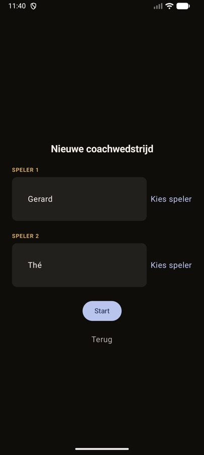
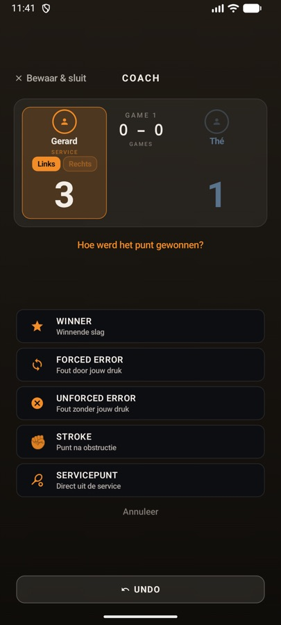
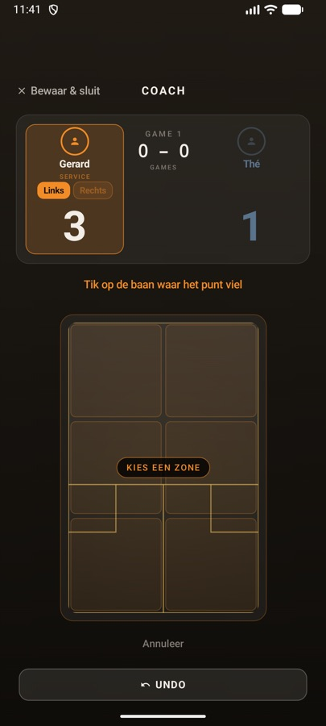
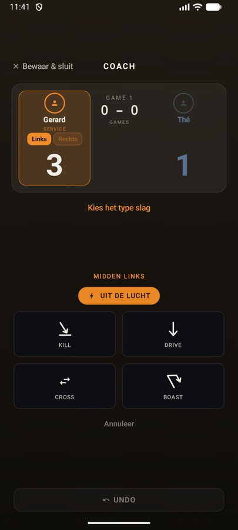
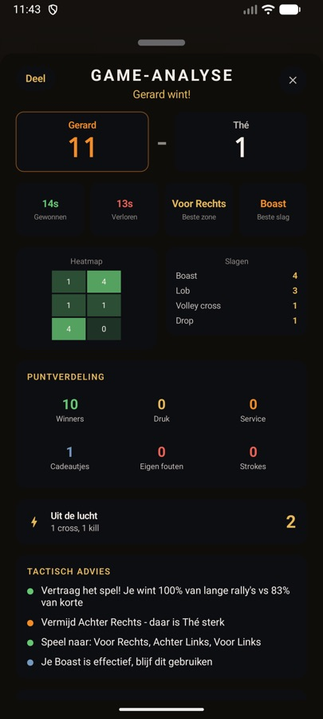
🏆Scheidsrechter
Snel en officieel scoren, met de serviceregels
Starten of hervatten
Net als bij Coach: een lopende wedstrijd kun je Hervatten. Voor een nieuwe vul je de namen in of gebruik je Kies speler, en tik je op Start.
Scoren
- Tik op de grote score (tik = punt) van wie de rally wint.
- Het servicevak wisselt vanzelf. Bij de serveerder kun je Links/Rechts aanpassen; de app onthoudt dat als voorkeur voor die speler (handig voor linkshandigen).
- In het midden staat de scorelijn: elke rally met de nieuwe stand en het vak, bijvoorbeeld 4R.
- Let en Stroke staan per speler onder de scores; Undo maakt het laatste punt ongedaan.
Game en wedstrijd klaar
Na een game tik je op Volgende game. Na de wedstrijd zie je de winnaar, de verdiende badges en Deel score.
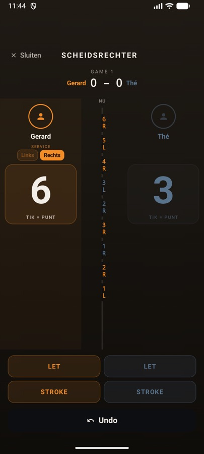
🕘Afgeronde wedstrijden
Een overzicht van wat je gespeeld hebt
Hier staan alle voltooide en afgebroken coach- en scheidsrechterwedstrijden, met datum en uitslag in games. Een lopende wedstrijd vind je niet hier, maar via de Coach- of Scheidsrechter-tegel.
Back-ups maak en zet je terug in Instellingen.
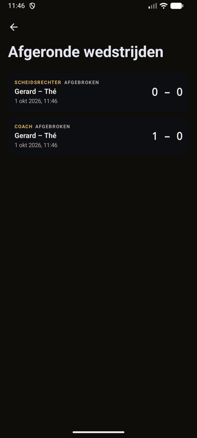
👤Spelers
Je vaste spelers, met aandachtspunten en badges
Spelers toevoegen en bewerken
- Tik op Toevoegen: naam, coaching focus (zoals Backhand of Conditie) en notities, dan Opslaan.
- Het potlood bewerkt, de prullenbak verwijdert. Gespeelde wedstrijden blijven bewaard.
- Heeft een speler badges, dan tik je op het medaille-getal om ze te zien.
Een heel team importeren
Tik op Team, plak de teamlink die je hebt gekregen (https://squashanalyzer.com/teams/…) en tik op Importeren. Spelers met dezelfde naam worden bijgewerkt, nieuwe worden toegevoegd.
Spelerskaart delen en ontvangen
Open de badges van een speler en tik op Deel kaart: je deelt een link naar de kaart. Krijg je zelf zo'n link, open hem dan op je telefoon. De app vraagt of je de kaart koppelt aan een Nieuwe speler of aan een bestaande speler. Deel een kaart alleen met toestemming van de speler.
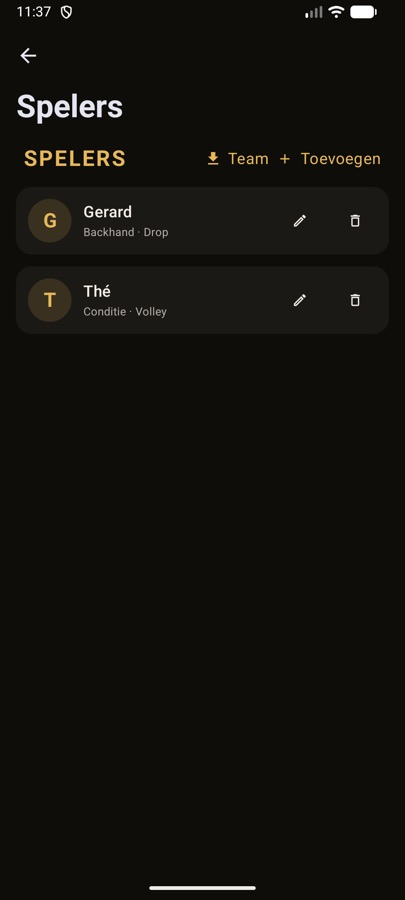
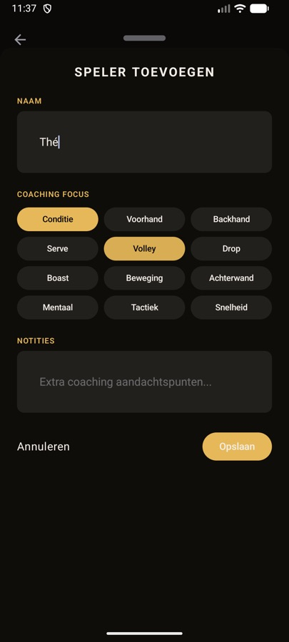
🏅Badges
Alle 31 badges en hoe je ze verdient
Badges verdien je automatisch tijdens wedstrijden, maar alleen met spelers die je via Kies speler hebt gekozen. De lijst is ingedeeld in In één game, In één wedstrijd en Over al je wedstrijden. Het label COACH betekent dat de badge alleen in de coachmodus te verdienen is; EÉN KEER dat je hem maar één keer krijgt.
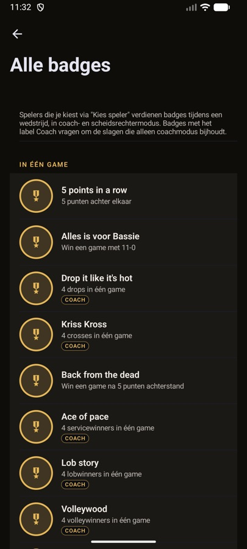
⚙️Instellingen
Tandwiel rechtsboven op het beginscherm
- Baanindeling: kies 6 vakken (standaard) of 9 vakken met een middenkolom.
- Mijn team: plak je teamlink van sbn.toernooi.nl en tik op Bewaar teamlink; Verwijder haalt hem weg.
- AI Coach: vul je eigen OpenAI API-sleutel in en tik op Bewaar API key. De sleutel wordt versleuteld op je toestel bewaard. Een analyse kost ongeveer € 0,01. Met Verwijder key haal je hem weg.
- Back-up:
- Maak back-up bewaart al je spelers, coachwedstrijden en badges in een bestand, bijvoorbeeld in Google Drive.
- Zet back-up terug: kies Samenvoegen (alleen wat nieuw is) of Alles vervangen. Een back-up van een iPhone werkt ook.
- Automatische back-up: tik op Aanzetten en map kiezen. Eén keer per week komt er een back-up in die map; de 7 nieuwste blijven bewaard.
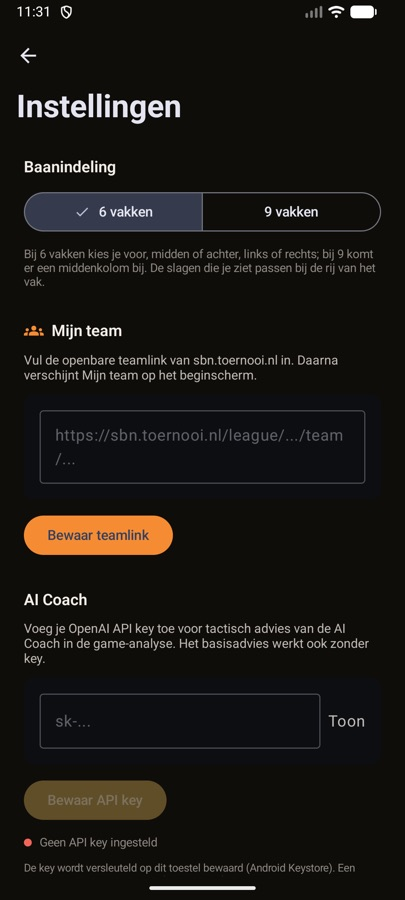
Vraag, fout of idee? Mail naar info@squashanalyzer.com.